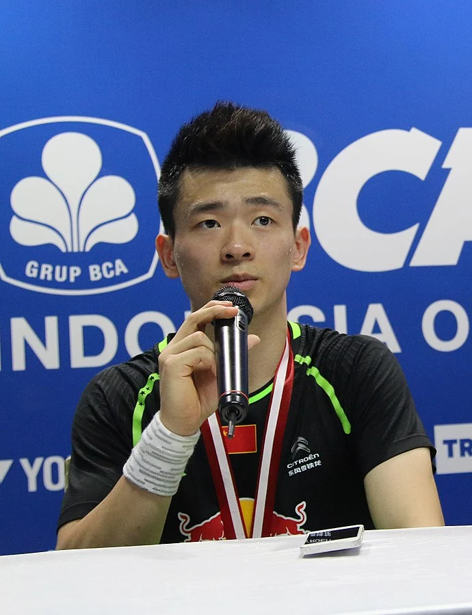

 Chine (1997) Biographie Zheng Siwei, né à Wenzhou en 1997, est un joueur de badminton chinois professionnel. Sa carrière internationale commence en 2015, lorsqu'il devient champion du monde en double garçons, double mixte et par équipes. Il enchaînera par la suite les médailles d'or internationales notamment aux World Superseries de Dubai en 2016, ou plus récemment en 2023 lors de l'Open d'Angleterre. Il participera également aux Jeux Olympiques de Tokyo en 2020, aux côtés de Huang Yaqiong, où ils obtiendront la 2e place. 1 Participation olympique Jeux d'été à Tokyo, 2020
Statistiques Classement Équipe Points Matchs Joués Matchs Gagnés Matchs Perdus Sets Gagnés Sets Perdus Points Gagnés Points Perdus 1 Zheng Siwei / Huang Yaqiong (CHN) 3 3 3 0 6 0 128 75 2 Kim Wong-ho / Jeong Na-eun (KOR) 2 3 1 2 3 4 130 135 3 Thom Gicquel / Delphine Delrue (FRA) 1 3 1 2 2 4 113 115